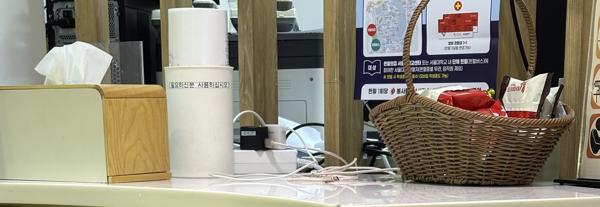
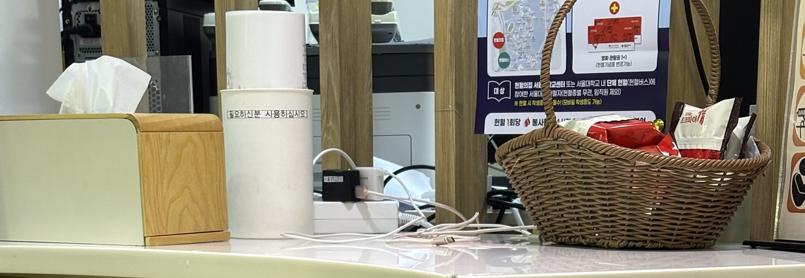

대한적십자사 혈액관리본부에 가 봤다
헌혈 현장 밖 보이지 않는 곳에서도, 헌혈을 위해 힘쓰는 이들이 있다.
이들을 만나기 위해, 꽤 먼 거리지만 원주행을 결심하게 됐다.
택시 창문 너머로 본 원주혁신도시는 신도시 느낌이 물씬 났다.
거대한 공공기관 건물들 사이를 지나, 붉은 십자가가 달린 건물 앞에서 하차했다.
건물 위에도, 간판에도, 안내판에도 어디에나 붙어 있는 흰색 배경의 붉은 십자가가 눈에 띄었다.
대한적십자사 혈액관리본부 1층 접객실에서 헌혈홍보팀 김세희 과장, 헌혈진흥팀 윤재규 담당자,
수급관리팀 이준호 과장, 그리고 품질보증팀 박성찬 팀장을 만났다.
*대한적십자사 혈액관리본부는 헌혈의 집을 운영해 1년 헌혈량의 약 90%를 수급하고 있다.
다른 혈액원에도 혈액관리본부가 따로 있으며,
여기서는 대한적십자사만 취재했음을 밝힌다.
#입대 가산점
“아무래도 입대 가산점을 받기 위해서 처음 헌혈의 집에 갔던 것 같아요.”
“공군으로 입대하기 위해서 올해 초부터 헌혈하고 있고….”
헌혈의 집에서 만난 병역 의무자 8명 중 7명은 헌혈로 입대 가산점을 받았다. 근무 요건이 좋다고 알려진 공군 입대를 위해서 가산점을 빠르게 채울 수 있는 헌혈에 관심을 가지게 된 것이다. A씨(20)는 “입대 가산점을 전부 채우려면 64시간 봉사를 해야 하는데, 헌혈하면 한 번당 8시간의 봉사 시간을 채워줘서 헌혈을 결심했다”라고 밝혔다. 7명의 학생은 모두 입대를 1년 정도 앞두고 공군 지원을 위한 준비를 시작했고, 단기간에 다회 헌혈이 가능한 혈장 헌혈을 선택했다.
일곱 학생의 생애 첫 헌혈 계기 역시 공군 입대 가산점이었다. 고등학교 때는 건강 문제 등의 이유로 헌혈하지 않았다가, 작년이나 올해부터 헌혈 주기마다 헌혈의 집을 찾았다. B씨(23)는 “대학에 오고 나서 건강이 좋아져서 한 학기 만에 8번 헌혈하고, 공군에 입대할 예정이다”라고 설명했다. C씨(22)도 “고등학교 때는 건강도 안 좋았고, 공부하느라 헌혈 생각을 못 했던 것 같다”라며 “첫 헌혈 계기는 공군 입대 가산점이었고, 대학 와서 시작했다”라고 밝혔다. C씨와 D씨(20)는 주변 지인들 역시 공군으로 입대하기 위해 헌혈하는 경우가 많으며, C씨·D씨와 같이 첫 헌혈의 계기가 입대 가산점인 지인이 많다고 입을 모았다.
입대 가산점으로 시작된 헌혈이 앞으로도 이어질까?
더블클릭!
#고등학교 헌혈버스
“고등학교 때 헌혈버스가 오면 친구들이랑 우르르 갔던 기억이 나요.”
“제가 헌혈하지 않더라도 친구들이랑 다 같이 헌혈의 집에 갔어요.”
헌혈버스를 통해 헌혈을 접하게 됐다는 학생들도 많았다. E씨(29)는 “고등학교로 찾아온 헌혈버스를 통해 처음 헌혈을 접했다”라며, “대학 입학 후 혈관이 얇아서 직접 센터로 가보라는 헌혈버스 간호사의 답변이 생각나 진짜 센터를 방문했다”라고 덧붙였다. F씨(26)도 “고등학교 때 헌혈버스가 와서 몇 번 헌혈하며 관심을 가지게 됐다”라고 밝혔다. F씨는 고교 졸업 후 6년이 지난 지금까지도 꾸준히 헌혈을 실천해 왔다.
고등학교 시기는 성년 이후와 달리 또래와 함께 단체헌혈을 할 기회가 많다. 친구들과 함께 헌혈버스를 방문하며 소속감과 재미를 느낄 수 있어 성년 후보다 편하게 가게 됐다는 답변이 많았다. G씨(31)는 “고등학교 때는 단체로 같이 한다는 소속감이나 재미도 있고, 그에 따르는 물질적 보상도 있어서 많이 했던 것 같다”라고 밝히며, “헌혈버스가 가던 고등학교 시절을 빼면 주변에서 헌혈을 많이 한다고 생각해 본 적은 없다”라고 정리했다.
대입 봉사활동 점수 개편 이후, 현장에서 느낀 고등학생 헌혈은?
저출생 시대, 줄어드는 청년, 그리고 헌혈
#헌혈 경험이 또 다른 헌혈을 낳는다
“처음엔 단순한 호기심이었는데, 하다 보니까 봉사가 되는 것 같아 쭉 합니다.”
“입대 가산점을 받기 위해 시작했는데, 제대 후에도 헌혈할 생각이 있습니다.
생각날 때 전혈 헌혈을 할지 고민 중입니다.”
첫 헌혈 경험이 긍정적 인식과 만족감을 주었다는 학생들이 많았다. 첫 헌혈 후, 막상 해 보니 그렇게 어렵지 않았고 헌혈이 주는 보람과 자부심이 더 크게 느껴져 계속 헌혈을 하겠다는 것이다. E씨는 “처음에 주삿바늘이 들어갈 때는 아팠는데, 막상 시간이 지나니까 괜찮아져서 다음에 또 할 생각이다”라며, “센터 간호사 분들이 친절하고 세심히 챙겨줘서 안심됐다”라고 덧붙였다. F씨도 “단순한 호기심에서 시작했는데, 봉사활동도 할 수 있고 이벤트도 많아서 쭉 하게 됐다”라고 설명했다.
입대 가산점을 위해 헌혈의 집을 처음 찾았던 7명 중 6명의 학생도 가산점을 채운 이후에도 헌혈의 집을 찾거나, 그럴 의향이 있음을 밝혔다. C씨는 “공군에 가기 위해 헌혈을 하기 시작했는데, 막상 해 보니 별것 아니었다”라며 “헌혈을 하다 보니까 거부감이 없어졌다”라고 소감을 밝혔다. 실제로 C씨는 공군의 가산점 기준을 다 채웠음에도 헌혈의 집을 찾았다. H씨(19)도 “헌혈하고 나면 기분이 좋고 좋은 일이라는 생각이 들어서, 앞으로도 계속할 의향이 있다”라고 말했다. C씨 등 네 명의 학우들은 다음에는 혈장이 아니라 전혈도 해 보고 싶다며 다른 헌혈에도 관심을 가졌다.
입대 가산점으로 헌혈에 입문한 학생들의 이야기
간호사도 첫 헌혈 경험을 강조했다
#건강
“헌혈하려면 전날 음주도 안 되고, 여러 가지로 건강에 대한 조건이 은근히 맞추기 힘들어요.”
일정 건강 기준을 통과한 건강한 사람만이 헌혈할 수 있다. 헌혈은 수혈자에게 건강한 혈액을 전달하는 것이 목표이기 때문에, 보건 당국은 헌혈자의 건강과 관련해 실용보다는 완벽의 관점에서 매우 엄격한 기준을 적용하고 있다. 실제로 B씨와 C씨는 고교 시절 건강이 좋지 않아 문진 단계를 넘을 수 없었다. G씨는 여성은 태생적으로 철분 수치가 남성에 비해 낮은 편이라 어쩔 수 없는 제약이 따른다고 밝혔다. 이렇듯 △복용 약물의 종류 △질병 기록 △수술 기록 △해외 거주 이력 등 까다로운 건강 조건(화면으로도 제시)을 모두 통과하지 못하면 헌혈할 수 없다. 이를 두고 F씨는 “애초에 헌혈할 수 있다는 것 자체가 건강하다는 것”이라고 표현했다.
건강해야만 헌혈할 수 있지만, 의외로 헌혈 자체가 건강에 도움이 되는 행위이기도 하다. 헌혈의 집에서는 헌혈할 때마다 혈액 검사 결과를 헌혈자에게 공유하고 있다. F씨는 “꾸준히 헌혈하니 혈액 수치를 자주 확인할 수 있다”라며, “간 수치를 꾸준히 지켜봐야 하는 상황이었는데, 건강검진뿐 아니라 헌혈하러 올 때도 확인할 수 있어서 좋았다”라고 밝혔다.
헌혈자와 수혈자의 건강을 지키기 위한 본부의 노력
#마무리. 결국, 사회적 의식이 강해져야 한다
“결국 어릴 때부터 교육도 잘 돼야 하고, 헌혈이 꼭 필요한 일이며 이게 없으면 안 된다,
내가 헌혈 안 하면 안 된다는 의식이 강해져야 하겠죠.저희도 그것을 높이기 위해 노력해야 하고요.”
앞으로 헌혈이 더 활발해지기 위한 방법을 묻는 마지막 질문에 박성찬 팀장이 내린 결론은 명쾌했다.
저출생·고령화가 현실이 된 지금, 근시안적 헌혈 정책도 필요하지만,
미래의 헌혈자를 유치하기 위해서는 결국 헌혈의 가치를 전파하고
헌혈을 사회적 책무로 바라보는 인식을 키우는 것이 가장 중요한 과제다.
이들의 노력이 결실을 보아 더 많은 청년이 오늘의 헌혈자이자 미래의 헌혈자가 되기를,
그래서 우리나라가 인구 구조적 어려움을 극복하고 따뜻한 나눔의 가치를 더 많은 사람들이 누리기를 기대한다.

 
